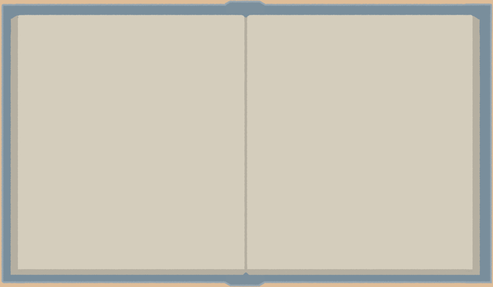

Qyllscape
Not to make writing easier, but to make it easier to sit down and write.
Not to make writing easier, but to make it easier to sit down and write.
I started developing Qyllscape because I needed something different, and wanted to make something that I could customize however I wanted.
Additionally, aesthetics were important to me, and I was spending so much time in writing editors that seemed so separated from the spirit of what I wanted to create. I can't tell you how manty times I searched for "Writing software that looks like a book" and was never able to find something that satisfied me.
So, Qyllscape
Release Updates
While the primary platform for Qyllscape will be Steam, there will be a non-Steam version available. Use this google form to add your email and be notified upon release.
If you plan to use Qyllscape through Steam, you can visit the store page or wishlist using the link below.
| Features | Competitors | Qyllscape |
|---|---|---|
| Helps you write a novel. | Yes | Yes |
| Looks and functions exactly like Qyllscape. | No | Yes |